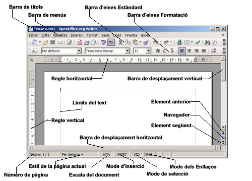
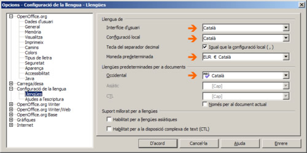
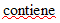
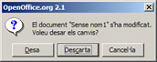
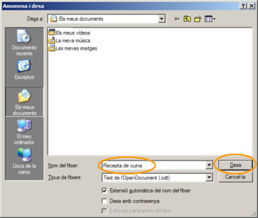
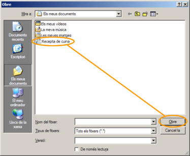
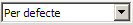
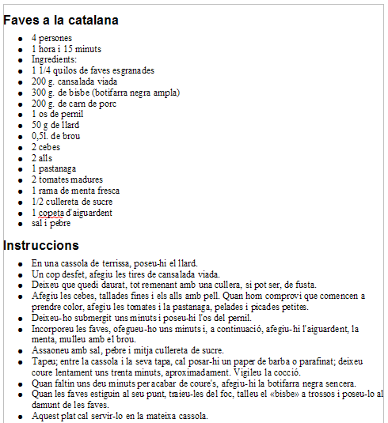

UF3. Processadors de text
Pràctica 1 - Exercici 2
Iniciar lel LibreOffice Writer
-
L'objectiu d'aquesta pràctica és conèixer els elements de l'entorn de treball del programa i configurar, de forma adient, les opcions de configuració de llengua del LibreOffice Writer.
-
Inicieu el LibreOffice Writer. Recordeu que, en la pràctica anterior, a la secció Iniciar el Writer, s'explicaven les diferents opcions d'activació del programa.
-
Observeu els diferents elements de la finestra de treball del programa:
-
Barra de títols:
Informa sobre el nom del document actiu i el nom del programa. -
Barra de menús:
Conté, agrupats per categories, tots els comandaments que es poden utilitzar amb el processador de textos. -
Barres d'eines Estàndard i Formatació:
Conjunt d'icones que permeten realitzar de forma ràpida els comandaments principals del LibreOffice Writer. Les barres d'eines es poden personalitzar, amagar, mostrar i moure. Les eines d'aquestes barres poden ser icones, textos o ambdues coses. -
Barres de desplaçament Horitzontal i Vertical:
Permeten controlar la part de document que es mostra en la pantalla. -
Elements de navegació:
Anterior o Següent Permeten saltar a l'element anterior o següent (pàgina, taula, marc de text, gràfic, objecte, pàgina, encapçalament, etc.), segons s'hagi escollit prement el botó de Navegació. -
Regle Horitzontal i Vertical:
Indiquen la posició de les tabulacions, sagnats i marges del document. -
Barra d'estat:
Proporciona informació del que s'està veient a la finestra o informació relativa al context.
-
-
Demaneu el menú Ajuda |
 Què és això? (o premeu Majúscules+F1). Passegeu el ratolí, que ara haurà pres la forma , per sobre de les diferents eines i objectes de la finestra de treball. En fer-ho obtindreu informació de l'element sobre el qual haureu situat el ratolí. Premeu la tecla Esc o feu clic amb el
ratolí per desactivar l'ajuda de context.
Què és això? (o premeu Majúscules+F1). Passegeu el ratolí, que ara haurà pres la forma , per sobre de les diferents eines i objectes de la finestra de treball. En fer-ho obtindreu informació de l'element sobre el qual haureu situat el ratolí. Premeu la tecla Esc o feu clic amb el
ratolí per desactivar l'ajuda de context.
Procediu ara a revisar la configuració d'idioma del LibreOffice Writer:
-
Demaneu l'opció de menú Eines | Opcions….
-
Desplegueu la branca Configuració de la llengua (premeu amb el ratolí sobre el signe + ) i, d'aquesta, seleccioneu l'opció Llengües. Configureu les opcions de forma que quedin com les que es mostren a la següent figura:
 -
Premeu el botó D'acord per desar els canvis.
-
Assegureu-vos que l'eina sigui activa (remarcada i sobre fons gris fosc) i escriviu el text següent:
Aquest text contiene una falta d'ortografia:
-
Comproveu que, efectivament, el programa només assenyala la paraula . Si obteniu un resultat diferent:
-
Comproveu que l'eina és activa.
-
Reviseu la configuració de llengua.
-
-
Sortiu del LibreOffice Writer tot descartant desar el document:
-
Demaneu Fitxer | Surt (o premeu Ctrl+Q).
-
Premeu el botó Descarta de la finestra que obtindreu. 
-
Crear un document i desar-lo
-
Aquesta pràctica té com a objectiu treballar les eines bàsiques d'edició del LibreOffice Writer i els procediments per crear, escriure i desar documents.
-
Inicieu el LibreOffice Writer.
-
Escriviu el text següent. No us preocupeu si la longitud de les línies que obteniu al vostre ordinador no són les mateixes que les del text que esteu copiant. Canvieu de línia (amb RETORN) només en arribar a final de paràgraf i deixeu que sigui el LibreOffice Writer el que ajusti les línies del text a l'amplada del document.
Faves a la catalana 4 persones 1 hora i 15 minuts Ingredients: 1 1/4 quilos de faves esgranades 200 g. cansalada viada 300 g. de bisbe (botifarra negra ampla) 200 g. de carn de porc 1 os de pernil 50 g de llard 0,5l. de brou 2 cebes 2 alls 1 pastanaga 2 tomàquets madurs 1 rama de menta fresca 1/2 cullereta de sucre 1 copeta d'aiguardent sal i pebre Instruccions Poseu el llard en una cassola de terrissa.Un cop desfet, afegiu les tires de cansalada viada. Deixeu que quedi daurat, tot remenant amb una cullera, si pot ser, de fusta. Afegiu les cebes, tallades fines, i els alls amb pell. Quan hom comprovi que comencen a prendre color, afegiu els tomàquets i la pastanaga, pelats i picats ben petits. Deixeu-ho submergit uns minuts i poseu-hi l'os del pernil. Incorporeu-hi les faves, ofegueu-ho uns minuts i, a continuació, afegiu-hi l'aiguardent i la menta i mulleu amb el brou. Assaoneu amb sal, pebre i mitja cullereta de sucre. Tapeu. Entre la cassola i la seva tapa, cal posar-hi un paper de barba o parafinat; deixeu coure lentament uns trenta minuts, aproximadament. Vigileu la cocció. Quan faltin uns deu minuts per acabar de coure's, afegiu-hi la botifarra negra sencera. Quan les faves estiguin al seu punt, traieu-les del foc, talleu el «bisbe» a trossos i poseu-lo al damunt de les faves. Aquest plat cal servir-lo en la mateixa cassola.
-
Deseu el document
-
Demaneu Fitxer | Desa (o premeu Ctrl+S). També podeu desar-lo prement sobre l'eina
 Desa de la barra d'eines
Estàndard.
Desa de la barra d'eines
Estàndard. -
En la finestra Anomena i desa que haureu obtingut, localitzeu la destinació fent ús de Desa a, escriviu el nom del fitxer (Recepta de cuina) i premeu el botó Desa.

-
-
Sortiu del LibreOffice Wirter amb Fitxer | Surt (o premeu Ctrl+Q).
Recuperar un document i desar-lo
-
Molt sovint necessitareu recuperar documents amb diferents finalitats: afegir-hi text, canviar-ne el format, imprimir-los, etc. En aquesta pràctica treballareu els procediments per recuperar un document, editar-lo i, finalment, desar-lo.
-
Inicieu el LibreOffice Writer.
-
Recupereu el fitxer Recepta de cuina que heu creat a la pràctica anterior per modificar-lo.
-
Demaneu Fitxer | Obre (o premeu Ctrl+O).
-
Localitzeu, en la vostra carpeta de treball, el fitxer Recepta de cuina.
Assenyaleu-lo amb el ratolí i premeu el botó Obre. Si no el teniu, podeu fer servir aquest: Recepta de cuina. En aquest cas, deseu-lo en la vostra carpeta de treball i procediu com s'explica al segon punt de la pràctica.
-
-
Aprofiteu per modificar alguns aspectes del format del document:
-
Feu clic en qualsevol indret de la primera línia del document, desplegueu l'eina Aplica l'estil  i seleccioneu Encapçalament 1.
-
Feu clic en qualsevol indret de la segona línia del document i activeu l'eina Pics activats/desactivats .
-
Procediu de forma similar amb la resta de línies del document fins que l'aspecte sigui el que observeu en la figura

-
-
Deseu el document amb els canvis que heu realitzat:
-
Demaneu Fitxer | Desa o premeu l'eina Desa de la barra d'eines Estàndard. També podeu desar el fitxer
prement la combinació de tecles Ctrl+S.
-
-
Sortiu de l’LibreOffice Wirter amb Fitxer | Surt (o premeu Ctrl+Q).

|
|

|
|